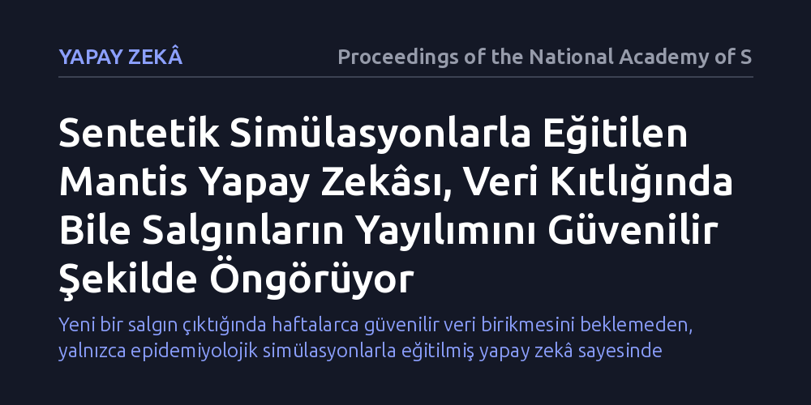

YAPAY-ZEKA · Proceedings of the National Academy of Sciences · 2026-10-15
Araştırmacılar, yeni patlak veren salgınlardaki veri yetersizliğini aşmak için epidemiyolojik simülasyonlarla üretilen sentetik verilerle Mantis adlı bir yapay zekâ modeli geliştirdi. Model, verinin kıt olduğu erken evrelerde bile hastalık yayılımını güvenilir biçimde tahmin edebildiğini gösterdi.
Yeni bir salgın çıktığında haftalarca güvenilir veri birikmesini beklemeden, yalnızca epidemiyolojik simülasyonlarla eğitilmiş yapay zekâ sayesinde erken ve doğru halk sağlığı tedbirleri alınabileceğini gösteriyor.

Salgın hastalıklar aniden ortaya çıktığında karar vericilerin en çok ihtiyaç duyduğu şey, hastalığın birkaç hafta veya ay sonra nereye evrileceğini bilmektir. Ancak klasik istatistiksel modeller ve derin öğrenme algoritmaları, geçmişten gelen devasa veri tabanlarına ihtiyaç duyar. Yeni bir virüs ya da patojen türediğinde ise ortada ne yeterli vaka kaydı ne de güvenilir test verisi bulunur. Bu veri kıtlığı, salgının ilk ve en kritik günlerinde sağlık sistemlerini adeta gözleri bağlı hareket etmeye zorlar.
Geleneksel mekanistik modeller yani hastalığın bulaşma dinamiklerini diferansiyel denklemlerle açıklayan matematiksel yapılar belirli bir biyolojik mantık sunsa da gerçek dünyanın karmaşık ve değişken koşullarına uyum sağlamakta zorlanır. Veriye dayalı yapay zekâ modelleri ise esnek olmalarına karşın eğitilecek veri bulamadıklarında tamamen çaresiz kalır. Bu durum, salgın biliminde uzun süredir çözülemeyen temel bir açmazı doğurur: Erken müdahale için en çok tahmine ihtiyaç duyulan anda, tahmin yapacak en az bilgiye sahibizdir.
Araştırmacılar bu kısıt döngüsünü kırmak için Mantis adını verdikleri yeni bir temel model tasarladı. Temel modeller, dil ve görüntü işlemede olduğu gibi, önce devasa bir evrende genel prensipleri öğrenip ardından özelleşmiş görevlere uyarlanabilen sistemlerdir. Ancak Mantis'in eğitimi için geçmişin eksik ve düzensiz salgın verilerine bel bağlanmadı; bunun yerine epidemiyolojinin temel mekanik kurallarını kullanan matematiksel modellerden yararlanılarak milyonlarca sentetik salgın senaryosu üretildi.
Bu sentetik veri kümesi, farklı bulaşma hızları, kuluçka süreleri, temas oranları ve toplum yapıları gibi çok çeşitli parametreleri içeren zengin bir simülasyon havuzu oluşturdu. Mantis, salgının biyolojik ve matematiksel yayılma mantığını bu yapay senaryolar üzerinden öğrendi. Böylece model, daha önce hiç karşılaşmadığı bir salgın örüntüsüyle karşılaştığında bile genel dinamikleri kavrayabilecek bir kuramsal altyapıya kavuştu.
Geliştirilen model, verinin son derece kısıtlı olduğu ve geleneksel yöntemlerin bocaladığı zorlu koşullarda sınandı. Araştırmacılar, Mantis'i erken evre salgın dinamiklerini temsil eden eksik ve gürültülü verilerle beslediklerinde, modelin yalnızca birkaç haftalık gözlemden hareketle hastalığın gelecekteki yayılım eğrisini dikkate değer bir isabetle çıkardığını gözlemledi.
Model, doğrudan gerçek veriyle eğitilmemiş olmasına rağmen sentetik veriden edindiği mekanistik kurallar sayesinde salgının seyrine dair mantıksız tahminler üretmekten kaçındı. Saf istatistiksel modeller verisizlikten dolayı aşırı uyum ya da saçma sapmalar gösterirken, Mantis hastalığın yayılma mantığına sadık kalarak güvenilir tahmin sınırları çizmeyi başardı.
Bu çalışmanın ortaya koyduğu yaklaşım, yapay zekânın yalnızca geçmiş verileri ezberleyen bir araç olmadığını; fiziksel ve biyolojik kurallarla üretilen simülasyonlar sayesinde henüz yaşanmamış krizlere de hazırlanabileceğini kanıtlıyor. Gelecekte yaşanabilecek olası bir pandemide, sağlık yetkilileri haftalarca güvenilir vaka kayıtlarının birikmesini beklemek zorunda kalmayabilir.
Yine de yöntemin sınırlarını unutmamak gerekir. Model her ne kadar mekanistik simülasyonlarla eğitilmiş olsa da insan davranışlarının karmaşıklığı, ani siyasi kararlar veya beklenmedik mutasyonlar gibi simüle edilmesi güç etkenler gerçek dünyada tahminleri saptırabilir. Mantis tek başına bir mucize değil, ancak kriz anlarında karar vericilerin önünü aydınlatacak güçlü ve yeni bir bilimsel fenerdir.